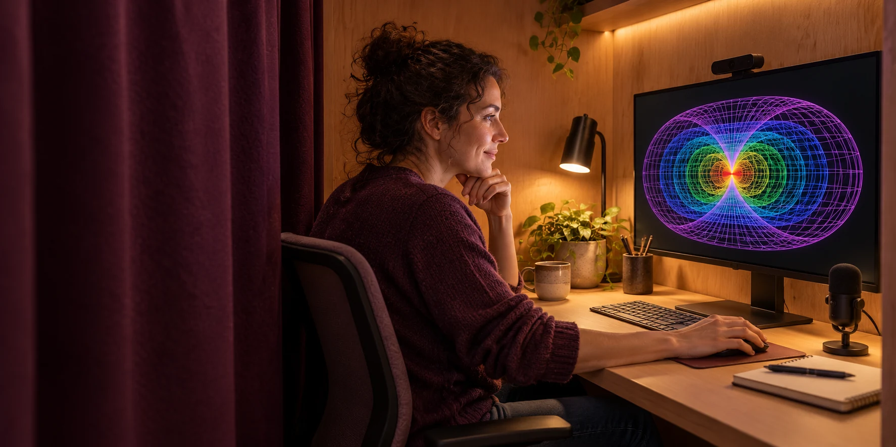
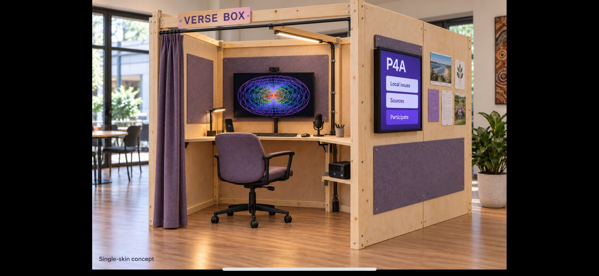

DEMONSTRATIONS AND EVERYDAY EXPERIENCES
A first visit
to Verse Box
Verse Box is a proposed public station for exploring personally owned artificial intelligence through demonstrations, equipment and assistance with a question or project.
What might happen on a first visit?
The proposed public station would combine demonstrations, assisted activities and access to the website or application.
Explore an interest
A host could help someone explore a skill, a project or a local issue. An everyday question might lead into travel planning, a business decision or finding an appropriate legal pathway before seeking advice. Demonstrations would use sample records.
Review the result
A session might produce a sourced explanation, body measurements, a creative work or a draft community proposal. The participant could inspect the inputs, correct errors and save the result to their own device.
Continue on your own device
A QR code or web address would open the website, with an application available for installation. Personal records would be collected and organised on the participant's device or browser storage. Assistance with transfer would be available for people using the public equipment.
| Public equipment | Its intended role |
|---|---|
| Computers and displays | Reuse suitable second-hand equipment, including ex-government or business mini PCs that meet the requirements for operating the sensors and applications. |
| Sensors, capture and measurement | Cameras, phone mounts, lighting and measuring tools for the activities offered. Check driver support, connections and calibration with the intended computer. |
| Portable flatpack structure | A transportable station with braced framing, stable feet, secure equipment mounts and clear assembly instructions. |
Candidate computers would be checked for software and driver support, connections, memory, storage and performance with the sensors and applications running together. Selection would consider condition, repairability and total cost.
The personal workbay would have enclosing panels and a curtain behind its operator. An outward-facing display would show public information and Purple Party for Australia (P4A), a proposed political party and public participation interface.

Experiences across everyday life
An Aura could grow across the activities that matter to its operator. Expansion options would describe their functions, equipment, data access, costs and support. [3, pp. 4-11; 1, p. 6; 4, pp. 15-18; 2, pp. 1-3]
| Expansion theme | An experience to explore | Choices that shape it |
|---|---|---|
| Body scan and avatar | Build a measured body representation. | Measurements, camera inputs, accuracy, inferred dimensions and access to images. |
| Values and reflection | Explore interests, goals, preferences and personal patterns. | Pace, vocabulary, viewpoints, intimate scope and retained interpretations. |
| Memory and mind palace | Organise records around meaningful places and recover their context. | Archives, sources, personal/shared spaces and storage location. |
| Learning, timing and practice | Explore ideas, practise skills and organise learning routines. | Sources, feedback, pace, reminders and quiet periods. |
| Travel, Earth and stars | Explore maps, places, travel histories and plans. | Map sources, location precision, retained journeys and shared views. |
| Civic participation / P4A | Explore public issues, compare proposals, prepare submissions and follow decisions. | Sources, place models, participation rules, public representation, responsible bodies and responses. |
| Community contribution / C-Hours | Find community activities and recognise voluntary contributions through conversation. | Personally agreed sources, remembered arrangements and community-chosen thanks. |
| Aura Genesis Protocol | A separate opt-in path to an ultra-high-definition Aura twin and twin socialising. | Chosen biosensors, continuous session capture, private archives and separately agreed research. |
| Connected devices | Understand the storage and computing available to the Aura. | Device roles, operators, trust, access, capacity and maintenance. |
| Home and assistance | Connect household devices and assistance tools. | Sensors, voice, shared spaces, permitted actions and manual control. |
| Creative and immersive tools | Work with art, sound and spatial experiences. | Creative purpose, displays/headsets, assets, recordings and compute. |
An Aura that fits where life happens
Aura's proposed applications span travel, households, learning, supported services, creative work and public participation. Equipment and services would follow the demands of each setting. [3, pp. 19-25; 1, p. 6; 4, pp. 15-18]
| Setting or opportunity | A possible experience | What to discuss |
|---|---|---|
| Travel and mobile life | Plan journeys, understand local conditions and carry personal context between places. | Sources, equipment, connectivity, location sharing and recovery after loss. |
| Family and shared experiences | Explore a space, learn or create together. | Personal accounts, shared content and suitable interfaces. |
| Learning and workshops | Learn through making, repairs, software and creative work. | Mentors, equipment, access needs and paid/voluntary status. |
| Legal guide and pathways | Understand the legal setting, find appropriate pathways and organise questions before seeking legal advice. | Place and jurisdiction, official sources, relevant bodies, time limits and records for an adviser. |
| Community projects and public decisions | Compare proposals, prepare submissions and follow decisions through P4A. | Sources, consultation dates, accessible participation, responsible bodies and published responses. |
| Accessibility and supported ageing | Use individually suited interfaces, memory tools or assistance. | The person's goals, chosen supporters and appropriate professional or service involvement. |
| Accommodation and retreats | Use Aura during a temporary stay or organised programme. | Device access, sensitive records, provider roles and handover on departure. |
| Performance and venues | Take part in audiovisual or shared interactive experiences. | Capacity, representation, recording, rights and who operates the systems. |
| Business and enterprise | Develop ideas, organise operations and explore business choices. | Customers, resources, costs, responsibilities, ownership and who benefits. |
Records, measurements and digital twins
A digital twin is a computer-based representation linked to a person, place or activity. A personal twin might combine a measured body model with records of experience. A place twin might represent a room, garden or public path. Records identify measured observations, personal accounts, interpretations and simulations.
Inputs could include documents, photographs, recordings, body measurements, wearables and environmental sensors. The capture plan would specify sources, recording conditions, storage and processing.
| Input | A possible use | Decision before adding it |
|---|---|---|
| Notes and files | Memory, learning, projects and references. | Selected folders or records, dates, source rights, other people's information and corrections. |
| Voice and video | Conversation context, creative practice or reflection. | Initiation or standing permission, visible recording state, shared spaces, retention and processing location. |
| Measurements and images | Body modelling, avatars and simulation. | Measured and inferred details, capture conditions, accuracy and audience. |
| Biosensors (optional) | Map body signals and connect them with personal context and the digital twin. | Sensor choice and number, recording rates, calibration, vendor access and permitted uses. |
| Home and environment | Resources, comfort, gardens and automation. | Rooms, devices, household boundaries, permitted actions and manual control. |
| Earlier archives | Connect earlier records with current work. | Size, ownership, dates, duplicates, retention and import formats. |
Capture could be started for each activity or follow a recurring schedule. Standing permission would specify the device, place, duration and uses, with controls to pause or change recording. Shared-space capture would require agreement with the people involved.
A person's words, a measured signal and an AI interpretation have different meanings. A record retains the source, time, conditions and uncertainty where relevant. A correction adds the changed understanding and updates the dependent working records. [2, pp. 25-31]
Represent the parts of life that matter
Body and place models could support avatars, measurements, inventories, maintenance and planning. The required accuracy and detail would depend on the application.
A measured body reference
Capture would use measured height, a defined arm-span pose and shoulder-width measurements as reference points. Repeated readings would help assess measurement error. Front and side images would use consistent framing and lighting. The record would retain original images, measured dimensions and software estimates.
An avatar is a digital representation of a body or character. Its proportions could come from measurements, photographs or reconstruction software. Each model would record its sources, method and measured accuracy. [9, slides 8-10]
A home or place reference
A room, garden or workshop model might hold inventories, maintenance notes, photographs, resource observations or different layout ideas. A simulated change is labelled as a possibility and compared with actual observations after an agreed action. [6, pp. 9-11]
| A household use | A boundary to discuss |
|---|---|
| Find a possession or maintenance record | Selected locations and records, with separate access for each person. |
| Understand resources or comfort | Chosen observations or sensors, their operators and the information retained. |
| Operate a selected device | The particular action, resources involved, review conditions and manual control. |
| Plan a change together | An agreed shared view, assumptions, affected people and the later outcome. |